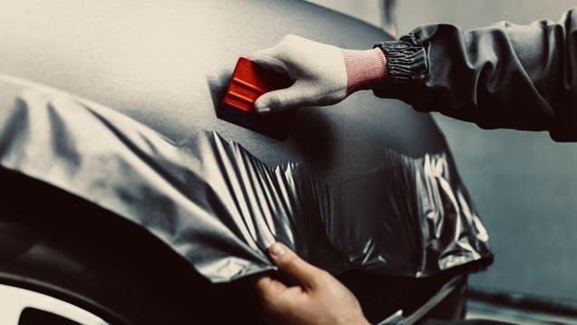
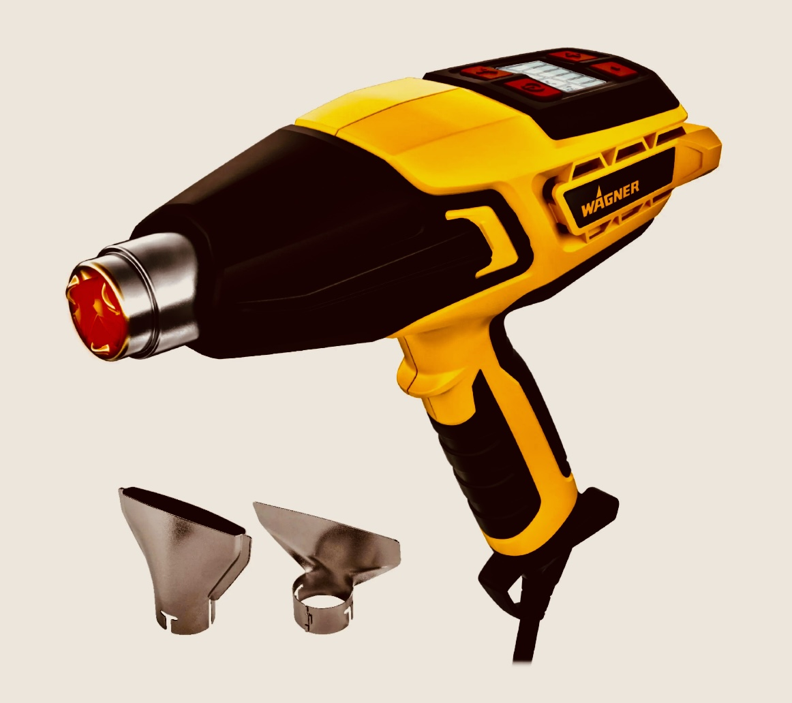
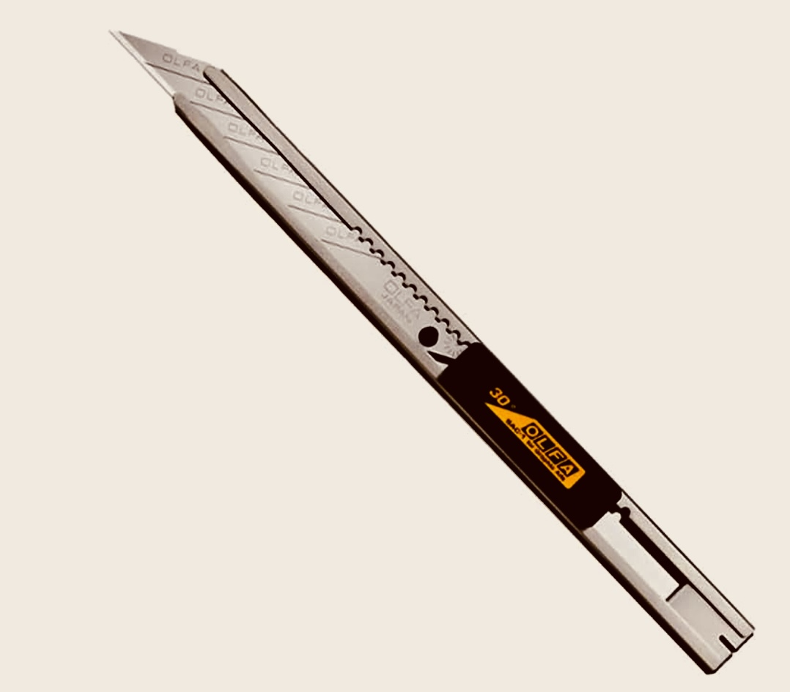
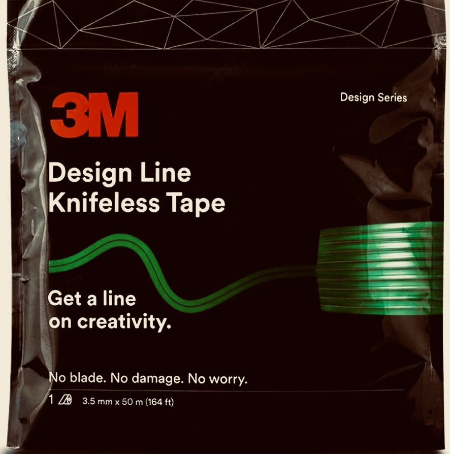
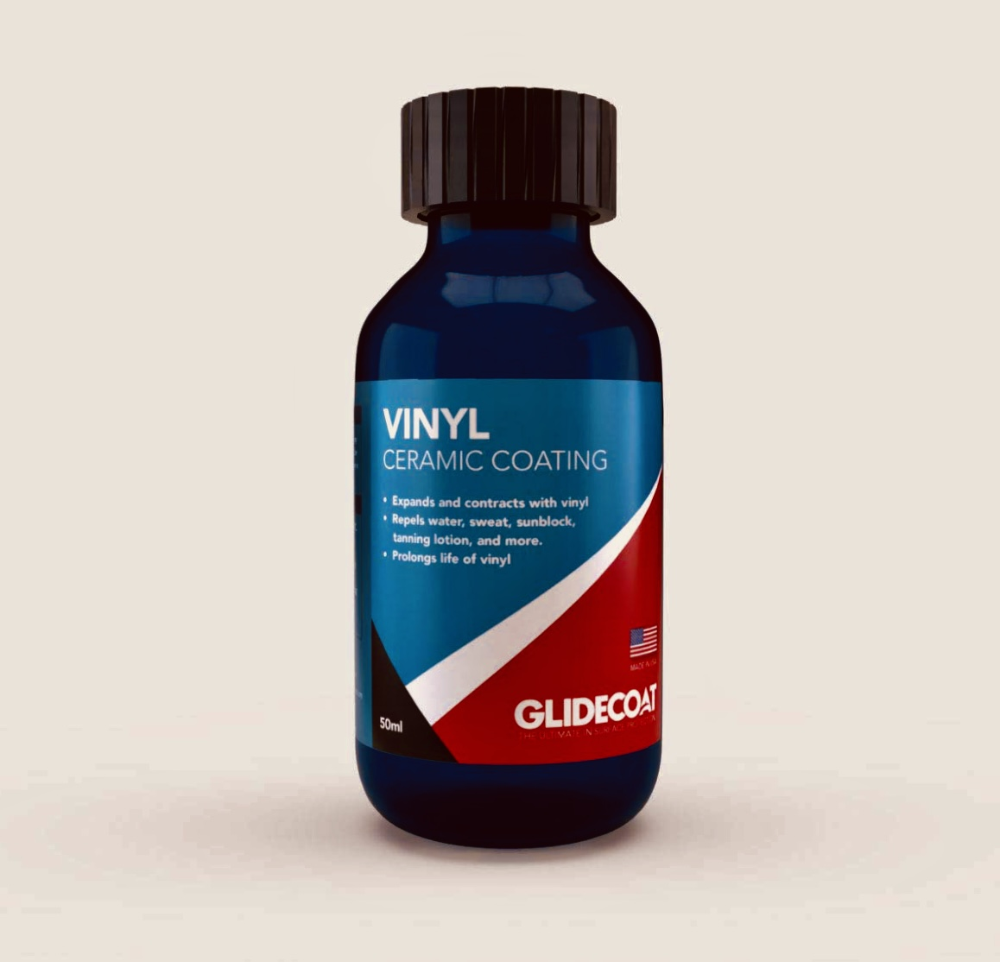

DIY Guide / How To Wrap A Car

A great method to change the colour of your automobile without breaking the bank on paint is to wrap it in vinyl wrap.
A vehicle wrap is a thin covering of vinyl that may be placed to the body of your car to alter its appearance.
For less money than a paint job, you may change the colour and style of your vehicle.
It's crucial to learn how to wrap a car before you start; let us teach!
1. Planning it out
Choosing your vinyl wrap and the car you wish to cover is the first step. You want long-lasting, premium vinyl. Selecting the top brands—such as 3M, Avery Dennison, Hexis, KPMF, and Metro Wrap—that offer the greatest vinyl available is the best option.
In addition, be careful of the vinyl material you purchase. Calendared films are often of lower quality and less costly than high-end cast vinyl wraps. They become brittle and perform worse with time due to their propensity to compress, shrink, crack, and curl. They are only suitable for flat surfaces because they are less elastic and more likely to tear. Cast films offer superior durability and are more stretchy and conformable. For top-notch cast films from well-known, reputable companies, Metro remake is your greatest option.
2. Get the Right Tools
-
Wrappers Gloves
-
Furno 500 Heat Gun

-
Scratchless Soft Suede
-
Olfa 30-degree Knife

-
3M Design Line Knifeless Tape for sharp

-
Vinyl Wrap Ceramic Coating



To get started, you'll need some key tools. High-quality gloves like WrapGlove's Elite Wrappers Gloves will help you slide smoothly over the vinyl and keep your hands clean. A good squeegee, such as the ProGlide Scratches Squeegee, is essential for smoothing out bubbles and ensuring a flawless finish.
A heat gun like the Furno 500 with adjustable settings helps you work with vinyl or paint by providing controlled heat. For precise cuts, an Olfa 30-degree Knife with multiple blades is perfect for detailed trimming. You can also use 3M Design Line Knifeless Tape for sharp, clean lines without risking damage. Lastly, applying Mfinity's Vinyl Wrap Ceramic Coating will protect your work and keep it looking shiny and new longer.
3. Remove air bubbles and wrinkles
If you notice any creases or air bubbles, carefully lift the vinyl, heat the area with the heat gun to around 120 degrees Fahrenheit, and then gently stretch the sheet again to make it flat. Avoiding overheating the film is crucial since it might cause the texture and quality to be lost.
4. Cutting away extra material & Tucking Edges.
When cutting the extra sheets, leave a gap of two to three millimetres from the edge. This additional vinyl should be plenty to fill the cracks or tuck around the edges. Tuck the edges in after cutting the material. To activate the glue on the remaining vinyl sheets, use the heat gun. Examine the panel to make sure there are no creases or stress once everything has been tucked and cut.
5. After Heating
Make sure to post-heat your wrap film by heating the sections that have been stretched out to fit in grooves, recesses, and channels. Move the heat gun over an 8 to 10-inch-wide area while it heats up until the proper temperature is attained. Take care not to overlook any spots. Keep the heat gun moving since applying heat in one place could burn the vinyl.
6. Aftercare
Before washing, let the vinyl wrap a full day to rest. Wash your car cover once a week for aftercare. The best approach to clean your car wrap is by hand using a soft sponge. Avoid using harsh chemicals, high-pressure washers, or stiff brushes that could harm the material.
We advise only utilizing safe auto polishes, waxes, and vinyl that has been approved by a major brand. To give your car wrap amazing durability and slickness, we suggest MFinitiy Ceramic Wrap Coating. Unlike other coatings on the market today, MFinity improves vinyl and PPF without altering the finish. The finish of your car will be shielded for two years by this 7H coating.